本教程由 🌴
ColinCora书写,Q3300519161
清理C盘教程目录第一部分：temp文件第二部分：转移桌面地址+回收站设置第三部分：磁盘清理第四部分：更改各个应用存储缓存位置第五部分：使用第三方清理工具进行清理第六部分：更改软件默认安装地址*第七部分： 高阶清理
Win+R输入%temp%进入temp文件
介绍：temp（临时文件夹temporary），位于C:\Documents and Settings\Administrator\Local Settings\内。很多临时文件放在这里，用来收藏夹，浏览网页的临时文件，编辑文件等。临时文件夹里的都可以删除，只是有些可能删不掉，因为有些程序正在使用，如后台程序你把所有程序都关掉，然后删除所有能删除的。
或者你可以直接用QQ电脑管家或360电脑管家的垃圾清理功能，这个文件夹里都是某些程序运行时产生的垃圾，可以删除。
弊端：这是许多软件都存在的文件夹。它是临时文件夹。也是一种缓存文件夹。是可以删除的。但是也是不可或缺的。一旦你删除了，可能导致对应的软件开启非常的缓慢。这是因为软件在重新缓存一些文件。所以会慢。
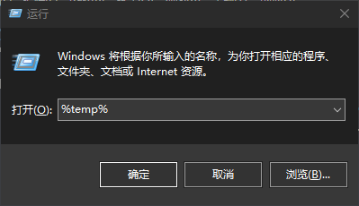
或者 在系统设置的环境变量里面，把temp文件夹该到别的盘
1.我的电脑右键
属性->高级系统设置->环境变量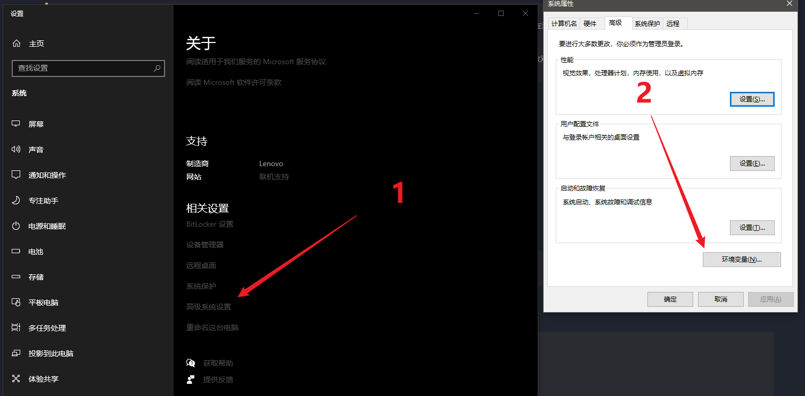
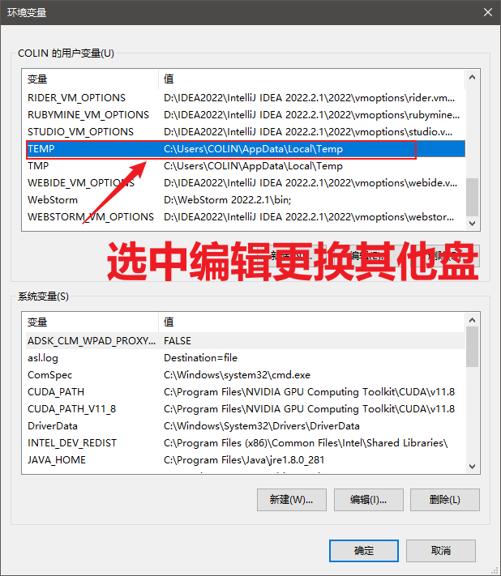
一、转移桌面地址
在你电脑的其他盘【容量较大的盘】里
新建一个Desk文件夹一定要建好文件夹1.然后打开我的
文件夹管理器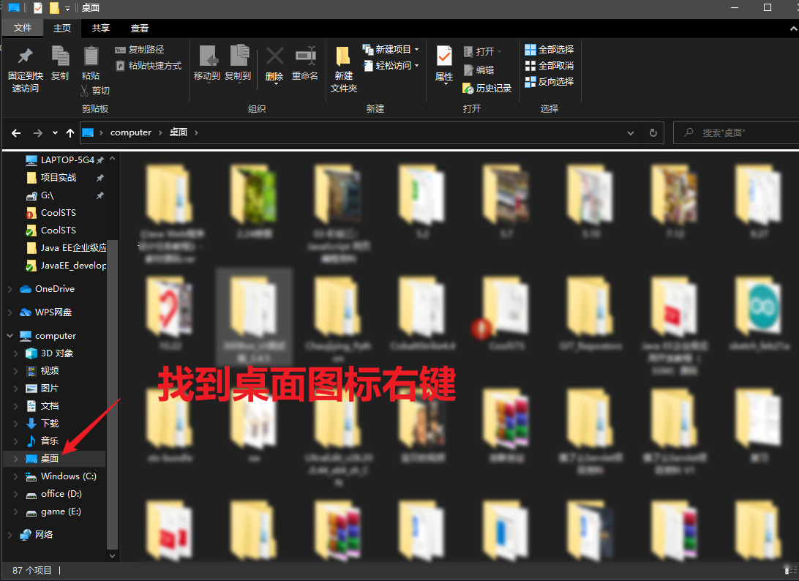
2.
属性->位置然后把桌面位置改为刚才新建的文件夹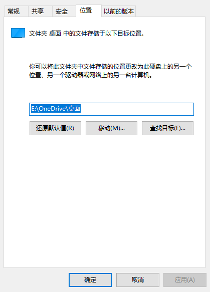
二、转移回收站设置
每个盘都有回收站的,并不是只有C盘有,默认每个盘都有回收站的,你删除哪个盘的文件,就回收到响应的盘的回收站. 但可以对回收站进行设置: 1 可以设置为直接删除,不回收.(删除的时候按住shift,可以达到直接删除的目的) 2 可以设置回收站的容量大小,当删除的文件大于回收站的容量时,就直接删除掉不放到回收站中. 设置回收站的方法是,对回收站点
右键,然后设置.
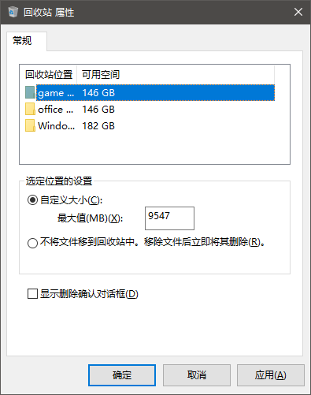
三、以此类推
照着这个思路以此类推：
凡是有特殊图标的文件夹比如我的音乐，我的文档等等，打开属性后是可以修改位置的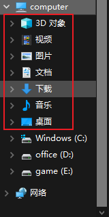
主要用来清理Windows更新文件和一些磁盘垃圾
1.我的电脑 找到C盘右键
属性->磁盘清理->清理系统文件夹->Windows更新清理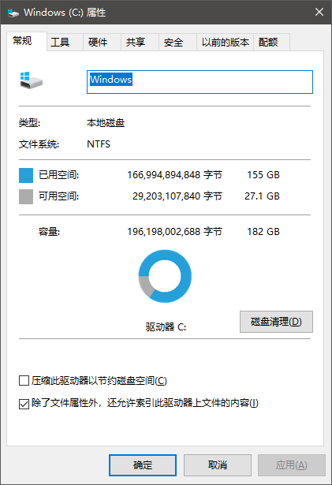
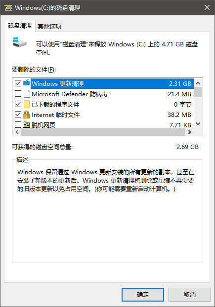
比如
微信等一些软件默认存储位置就在C盘我们可以通过打开响应软件设置来更改位置
例如微信：
设置->文件管理->更改位置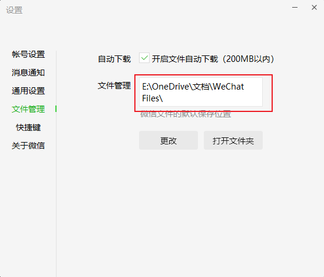
一、火绒
我们可以用火绒清理垃圾模块来进行磁盘垃圾扫描
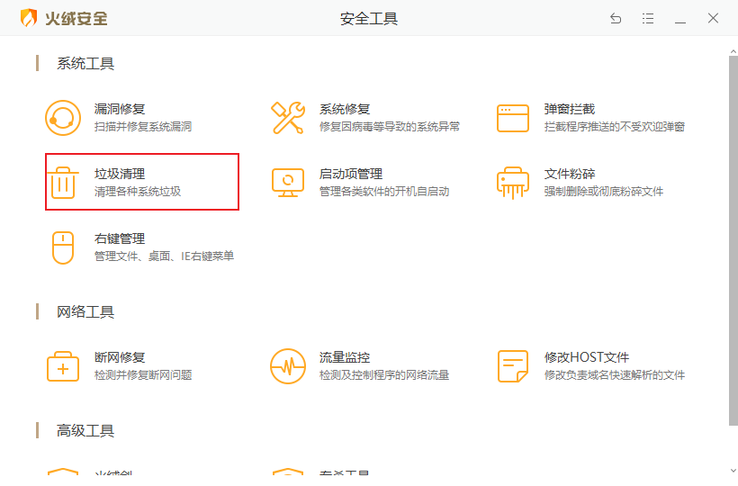
二、Dism++
打开
Dism->空间回收->默认->扫描->清理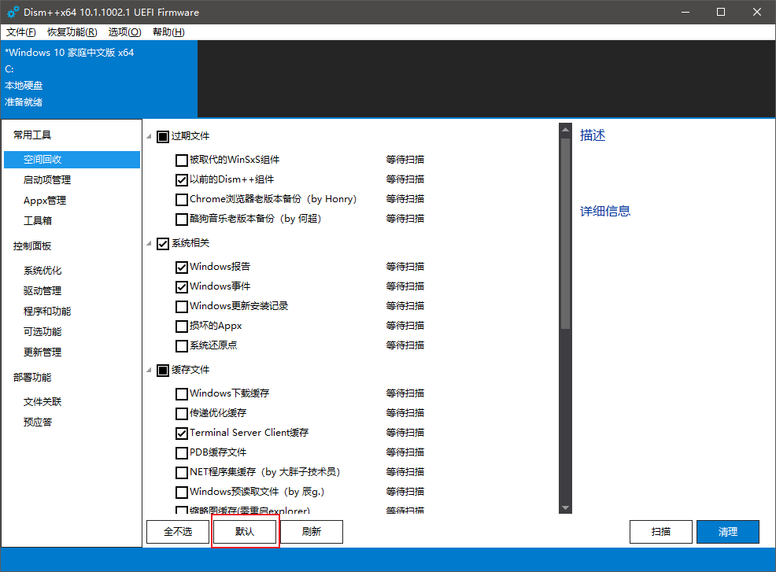
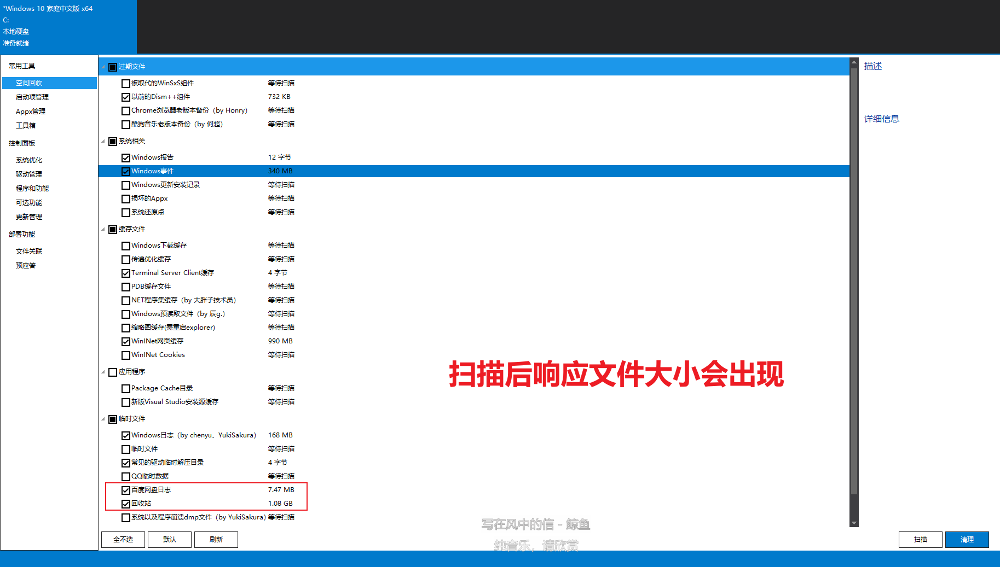
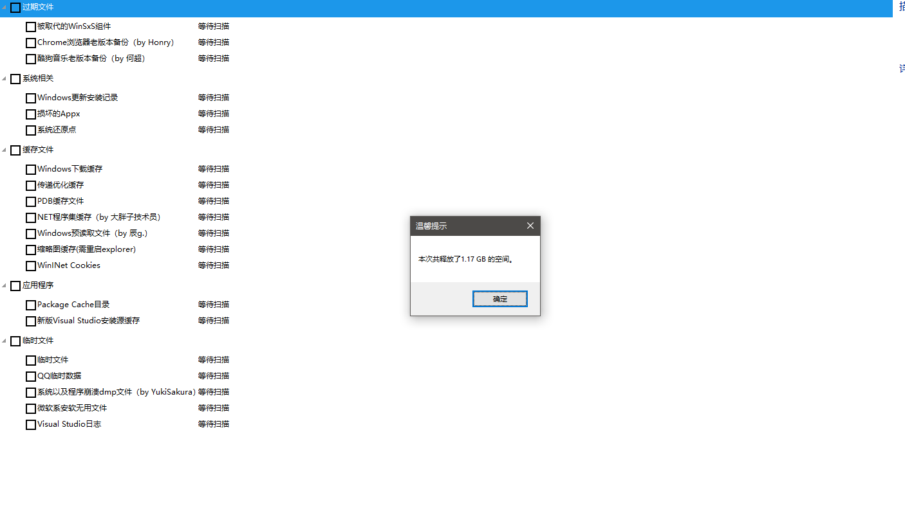
Dism++下载地址：链接：https://pan.baidu.com/s/1ix-Wk7ZMYgEkgU1D9x5j6A 提取码：5fiz
有一些软件默认安装在了C盘，这就会导致软件不仅占用C盘位置还会不断产生响应生成文件
如何更改呢？
1.Win+R输入
control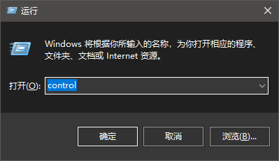
2.
程序和功能->卸载默认装在C盘的软件再安装【如果安装是独立于系统盘的可以整体剪切到其他空闲盘】 与此同时我们可以在这个页面卸载一些捆绑软件，比如XXX阅读器，XXX桌面等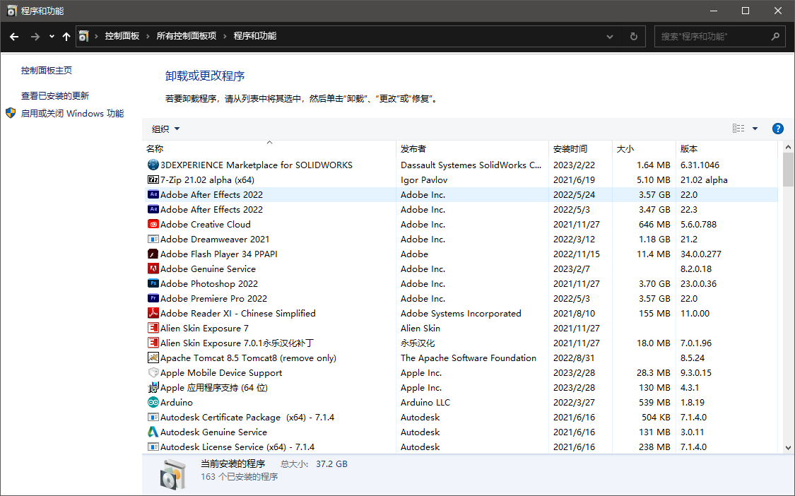
需要较强的
磁盘清理经验，小白谨慎操作1.Win+R输入
appdata->然后这个目录里面，一个是Local文件夹，一个是Roaming文件夹,进去慢慢手动清理吧。一般人起码有十几到二十G左右....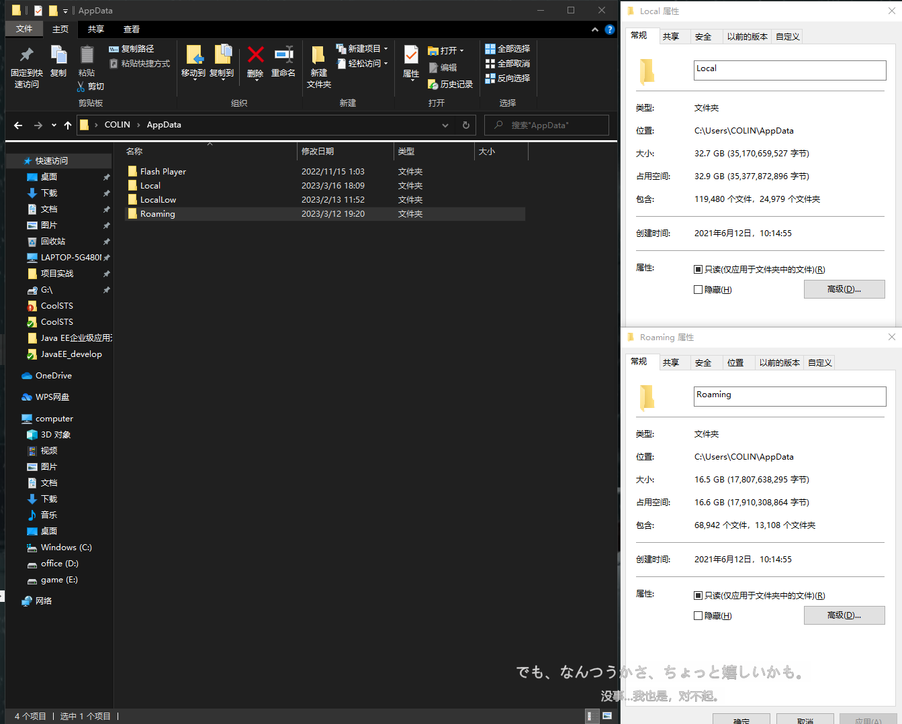
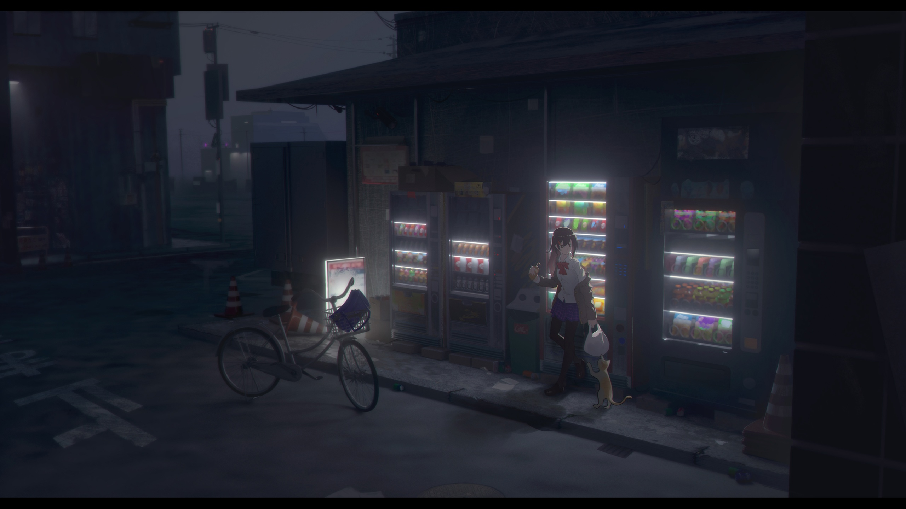